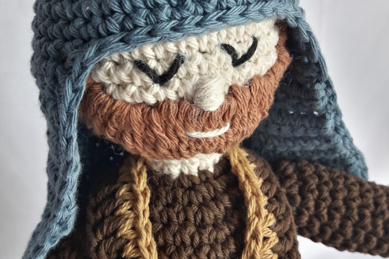
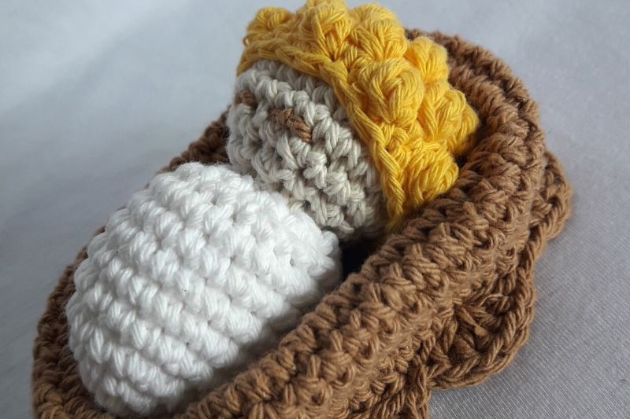
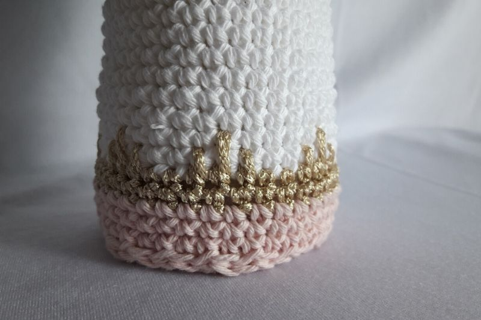

JOSE
Cabeza Color A
1. Anillo Mágico 6pb
2. 6aum 12pb color
3. 1pb, 1aum 18pb
4. 2pb, 1aum 24pb
5. 3pb, 1aum 30pb
6. 4pb, 1aum 36pb
7. 7 a 12 36pb
13. 4pb, 1dism 30pb
14. 3pb, 1dism 24pb
15. 2pb, 1dism 18pb. Rellenar cabeza con vellón
16. 1pb, 1dism 12pb
17. y 18. 12pb Color

Estola (Color D)
1. 60 cadenas +2
2. 27pb, 1aum, 4pb, 1aum y 27pb
3. 60pb en otro color
Cinturon (Color E)
65cadenas.
Bordar barba, ojos y nariz.
JESUS
Cabeza
1. Anillo Mágico 6pb
2. 6aum 12pb
3. 1pb, 1aum 18pb
4. 2pb, 1aum 24pb
5. Y 6. 24pb
7. 2pb, 1dism 18pb
8. 1pb, 1dism 12pb. Cerrar

Cuerpo
1. Anillo Mágico 6pb
2. 6aum 12pb
3. 1pb, 1aum 18pb
4. 2pb, 1aum 24pb
5. Y 9. 24pb
10. 2pb, 1dism 18pb
11. 9dism, cerrar. Coser cabeza y cuerpo, bordar ojos.
MARIA
Cabeza y cuerpo (túnica) (color A)
1. Anillo Mágico 6pb
2. 6aum 12pb
3. 1pb, 1aum 18pb
4. 2pb, 1aum 24pb
5. 3pb, 1aum 30pb
6. 4pb, 1aum 36pb
7. a la 12. 36pb
13. 4pb, 1dism 30pb
14. 3pb, 1dism 24pb
15. 2pb, 1dism 18pb Rellenar cabeza con vellón
16. 1pb, 1dism 12pb
17. y 18. 12pb (cuello)

Velo (color D)
1. Anillo Mágico 7pb
2. 7aum 14pb
3. 1pb, 1aum 21pb
4. 2pb, 1aum 28pb
5. 3pb, 1aum 35pb
6. 4pb, 1aum 42pb
7. 42pb
8. a la 23. 24pb, 1cad tejido recto
24. 24pb y dar una vuelta completa
Coser Ojos, nariz, boca y Cabello
Recomendaciones:
Jose y Maria no tienen por que ser tan altos, asi que teje una cuantas vueltas menos del cuerpo.
Materiales
Hilo de algodón color a eleccion
Aguja de Crochet N° 3
Aguja de coser Lana
Cintas, yute, lana gorda.
1 Rama, Vellon
bolitas de madera
Pegamento.
Abreviaturas
c:cadena
p: punto
p.enano: punto deslizado o razo.
Pb: punto bajo.
Pm: punto medio.
V o pa: vareta.
Pdv: punto doble vareta.
Aum: Aumento (2puntos en el mismo punto de base)
Dism: Disminucion (tomar 2puntos y cerrarlos juntos)
Cuerpo cambiar a Color B (Tunica)
1. 1pb, 1aum 18pb
2. 2pb, 1aum 24pb
3. 3pb, 1aum 30pb
4. 4pb, 1aum 36pb
5. a la 30. 36pb .Rellenar con buena cantidad de vellón el cuello para que quede firme.
Tapa Tunica (Base) color a elección
1. Anillo Mágico 6pb
2. 6aum 12pb
3. 1pb, 1aum 18pb
4. 2pb, 1aum 24pb
5. 3pb, 1aum 30pb
6. 4pb, 1aum 36pb. Rellenar cuerpo, coser base , preferentemente colocar acetato para que quede parado.
Brazos x2
1. Anillo Mágico 6pb color A
2. 6aum 12pb (A)
3. Der.:2pb, 1popcorn (x4pa), 9pb B Izq: 9pb,1 popocorn (x4pa), 2pb.(A)
4. 12pb (A)
5. a la 12. 12pb Color B (Rellenar con vellón)
13. 6dism, cerrar y coser al cuerpo
Velo (color C)
1. Anillo Mágico 7pb
2. 7aum 14pb
3. 1pb, 1aum 21pb
4. 2pb, 1aum 28pb
5. 3pb, 1aum 35pb
6. 10pb, 1aum 38pb
7. 38pb
8. a la 23. 24pb, 1cad tejido recto
24. 36pb y dar una vuelta completa por todo el velo para emprolijar el tejido
Cabello
1. Anillo Mágico 6pb
2. 6aum 12pb
3. 1pb, 1aum 18pb
4. 2pb, 1aum 24pb
5. 3pb, 1aum 30pb (cada 2p tejer un popcorn de 4pa, no olvidar respetar lo que corresponde a esta vuelta y solo frente)
6. y 7. 30pb, 1poporn de 4pa cada 2p, solo frente
8. 30pb cerrar y esconder hilos
Moises o Cuna
1. 10 cadenas + 1
2. Tejer 10pb, 1aum, 10pb, 1aum, cerrar con punto enano
3. 10pb, 1aum, 2pb, 1aum, 10pb, 1aum, 2pb, 1aum, cerrar.
4. 10pb, 1aum, 4pb, 1aum, 10pb, 1aum, 4pb, 1aum, cerrar.
5. 10pb, 1aum, 6pb, 1aum, 10pb, 1aum, 6pb, 1aum, cerrar.
6. 10pb, 1aum, 6pb, 1aum, 10pb, 1aum, 6pb, 1aum, cerrar.
7. 10pb, 1aum, 8pb, 1aum, 10pb, 1aum, 8pb, 1aum, cerrar.
8. 10pb, 1aum, 10pb, 1aum, 10pb, 1aum, 10pb, 1aum, cerrar.
9. a la 15. 48pb
Opcional: terminal con abanicos de 6pa.
Tunica ( color B)
1. pb, 1aum 18pb
2. 2pb, 1aum 24pb
3. 3pb, 1aum 30pb
4. 4pb, 1aum 36pb Rellenar con buena cantidad de vellón el cuello para que quede firme.
5. a la 25. 36pb
25. nuevo color cada 2pb : 1pmedio, 1p alta y 1pmedio 36pb
26. 36pb
27. a la 30.cambio de color 36pb
Tapa Tunica (Base) (color B)
1. Anillo Magico 6pb
2. 6aum 12pb
3. 1pb, 1aum 18pb
4. 2pb, 1aum 24pb
5. 3pb, 1aum 30pb
6. 4pb, 1aum 36pb
Rellenar cuerpo, coser base , preferentemente colocar acetato o cartón para que quede parado.
Brazos x2
1. Anillo Mágico 6pb color A
2. 1pb , 1aum 9pb
3. Der:2pb, 1popcorn (x4pa), 6pb Izq: 6pb, 1popcorn (x4pa), 2pb
4. a la 9. 9pb rellenar con un poco de vellon
Mangas: 18cadenas color rosa
1. 18pb color rosa
2. 18pb color dorado
3. 1pb, 1aum color blanco 12pb
4. 12pb
5. 2pb, 1aum 9pb
Unir con los brazos y continuar tejiendo hasta la vuelta 12.
13. 1pb, 1aum 9pb cerrar y coser al cuerpo a la altura de la vuelta 4.